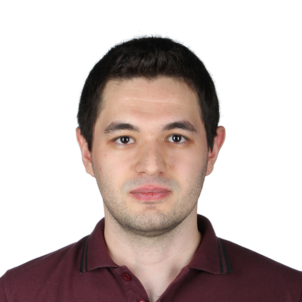

A bright and talented biomedical engineer wants to join an innovative, robust, and forward-thinking company. An effective team worker with an ability to demonstrate reliability and works as a problem-solver; seeks to work in acompany that has adopted these ideas.
April 2020 - Present
January 2016 - April 2016
May 2015 - August 2015
2019 - Current
2017 - 2018
2012 - 2017
Name: Mertcan Özdemir
Phone number: +90 535 355 6389
E-mail: mertcanozdemir@yahoo.com